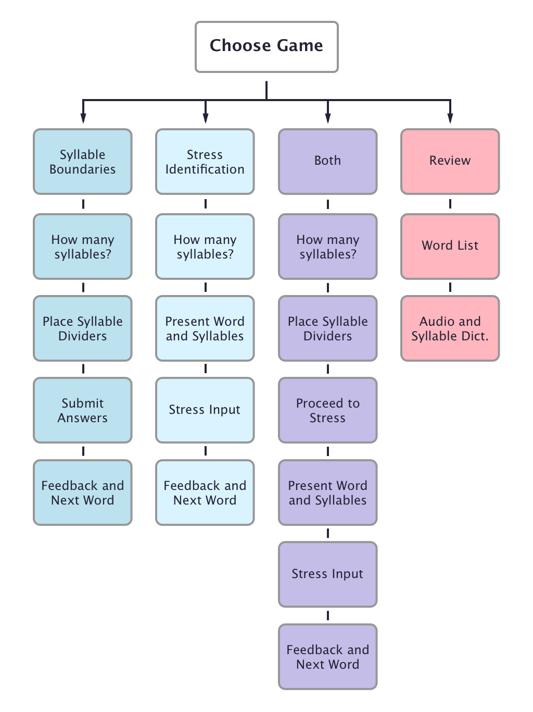

For children learning to read, segmenting a word into its syllables is an important part of the decoding process. A dauntingly long word to a 6 year old can become a lot less scary when broken up into smaller chunks. Even as adults, we only have a passive awareness of syllables to help us break unknown new words into intelligible bits.
For non-native speakers, particularly of English, it can be difficult to identify syllable boundaries or the places we choose to break up words into syllables. Learning to explicitly identify these boundaries can help non-native speakers improve their awareness of English sounds, and will lead to better listening and speaking skills.
Stress is also an important aspect of English pronunciation that is often not well understood by non-native speakers. Learning how to use stress properly in English can be the best way to improve pronunciation for an ESL speaker. Stress and syllables are intricately tied, and it’s necessary to first identify the syllables in a word before one can decide which syllable needs stress.
abracadabra → a‑bra‑ca‑da‑bra
The student will be shown an undivided word with at least three syllables, and will have to choose where to place "boundaries" to segment the word into its syllables.
me‑la‑to‑nin → me‑la‑TO‑nin
The student will be shown a word that has already been segmented into syllables, and will have to choose the syllable that carries stress.
demonstrate → de‑mon‑strate → DE‑mon‑strate
This will be a combination of the previous two features: the student will be shown an undivided word, choose where to segment the word into its syllables, and then identify the syllable that carries stress.
After each round, the student will see their tally of how many answers they had correct, and they will have the opportunity to go back and review missed words. They can also choose to review all the words they've missed in a list-format, which provides a quick-reference of the most difficult words for that student.
After delineating which features should be included, I created the following user flow. This diagram served as documentation of each step a user would take as they went through the app, and provided an outline for the screens into which the above features could be integrated. I tried to create a logical progression from one step to the next, with the aim of maximizing the user's learning while allowing for adequate control and feedback.
The idea is to begin at a launch pad from where students can choose from four possible tracks: three games, and a review feature. Each game starts by prompting the user to choose the number of syllables they'd like to practice, and then following each game's respective process. The review feature allows users to see a list of words they'd like to practice, and then dig deeper into a word to see its syllable division and audio pronunciaton.
Creating the user flow gave me a good sense of how I'd like to layout the app, but it wasn't a complete picture. I decided to sketch out wireframes for each screen, using the user flow as a guide, in order to get a better sense of how each specific feature would work. I also wanted to ensure I was allowing for enough control and feedback for users to successfully navigate the app.
There is nothing especially fancy about these pencil scribbles on Post-Its, but they serve as an important step toward a fleshed-out design. I went through several iterations for the layout of each game, thinking of various ways a user could input their guesses and considering the pedagogical best practices I'd learned in the past. After dozens of crumpled up notes, I landed on these designs.
I played with different visual elements for each game, but one I really struggled with was how to best allow users to create a "boundary" between letters for syllable division. I decided to provide a boundary "stockpile," allowing the student to drag a boundary from the stockpile to the space between two letters and dropping it to create a visual division. I also chose to provide feedback on how many boundaries were left by showing Remaining: 2 , which clues students in on how many total syllables the word should have.
Finally, I used Sketch and InVision to create a low-fidelity prototype, guided by the wireframes I'd sketched out above. I avoided making any concrete decisions about visual design, focusing instead on functionality and usability.
InVision proved to be a great way to suss out how the app's flow might feel. I was able to iterate through several small-scale design changes while creating links between the screens, and I think it having this psuedo-functional "app" will prove valuable for future user testing.
Check out the prototype for yourself!
I'm very happy with the goals of this project, and I plan to flesh it out into a fully workable app in the near future. I envision using the current prototype to conduct preliminary user research with ESL students to see how they react to the features I've included so far. I'll incorporate their feedback into to a functional high-fidelity prototype, which I can test again before finally laying down code.
I have a growing list of further considerations that should be addressed with research participants, including the ideal number of syllables to practice based on skill-level, the number of word trials to include in each game, and the crucial question of where the vocabulary should be sourced from. A predefined list of words that ESL students often struggle with could work, but allowing users to define their own wordlists would be nice too.
There are certainly hypotheticals yet to address and more design work to be done, but I'm generally excited about this fun project, and I have high hopes for its future!